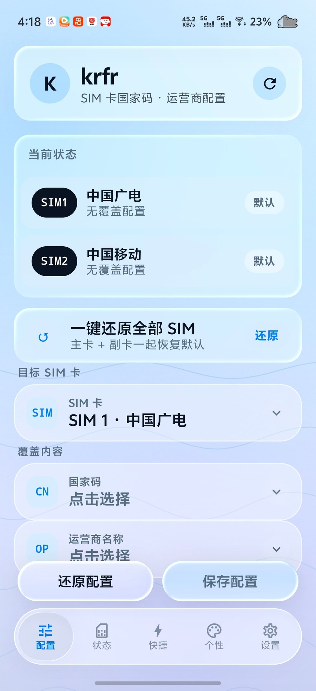

Per-SIM independent config · China Broadnet / China Mobile, MCC/MNC & carrier at a glance
Features
MCC/MNC & Carrier OverrideConfigure country code & carrier name per SIM independently, custom values supported.
Live SIM StatusSignal strength, network type, MCC/MNC, roaming state & masked ICCID in real time.
Backup & RestoreOne-tap backup of all configs, restore anytime, dual SIM together.
Quick PresetsSave common configs as presets and switch with one tap.
Personalize4 color themes, light/dark mode, custom background image, edit SIM display name.
Trilingual UIEnglish (default) / 简体中文 / 繁體中文, language picked on first launch.
Runtime LogEvery operation logged — view, copy, export, easy to troubleshoot.
No Root · ShizukuPowered by Shizuku, no root needed, safe and clean.
Changelog
No matching entries.
v2.0.02026-11-15Latest
- New Liquid Glass interface, rebuilt to the official AndroidLiquidGlass structure: the tab bar's selected capsule refracts both page content and the icon layer, with drag-to-switch, press dispersion and RTL support.
- New "Interface style" switch: Liquid Glass (default) or Native Material 3, one tap to change.
- Apple-blue palette, new app icon, smoother theme switching animations, and a redesigned result banner.
- Fixes: floating buttons covered by the tab bar, tab bar turning transparent after switching light/dark, transparent buttons in native style, over-transparent sheets, last row hidden on the SIM status screen.
v1.1.02026-10-18
- Runtime log now follows the interface language (English / 简体中文 / 繁體中文) — no longer always Simplified Chinese.
v1.0.92026-10-17
- Fix: editing carrier name (SIM display name) sometimes did not take effect — save failures no longer falsely report "saved"; read-back verification after write; explicit error + runtime log when not applied.
- Improved: after saving/resetting display name, the actual system name is refreshed automatically.
- Fix: adapted to systems without ISub.setDisplayName (Android 16 / OPPO etc.) — multi-channel reflection fallback (HiddenApiBypass / ISubExt).
v1.0.82026-10-16
- New "Personalize" tab: 4 color themes (dark green / ocean blue / warm orange / rose), light & dark modes, custom background image.
- SIM personalization: edit each SIM's display name (status bar card name), one-tap restore to default.
- Trilingual UI: English / Simplified / Traditional Chinese, fully localized.
- Quick presets, country code list & carrier names all follow the app language.
- Language picker on first launch (after Shizuku grant), auto-matches system language, switchable anytime in Personalize tab.
v1.0.72026-10-16
- Fix: restored config still showed old overridden carrier name (e.g. 3HK / au by KDDI).
- Carrier name now resolved from real SIM MCC/MNC via Shizuku (46015=China Broadnet, 46002=China Mobile, etc.).
v1.0.42026-10-15
- Update check now uses a fast domestic server first (GitHub API as fallback).
v1.0.22026-10-15
- Fix: "covered" misjudgment after config restored — now reads the real system state.
- Fix: empty runtime log after errors — all operation errors are now logged.
- New: one-tap copy / export log as file.
- Page auto-refreshes after restore/save, no stale data.
v1.0.12026-10-15
- One-tap restore much faster: dual SIM in parallel, removed duplicate blocking sync.
- Save/read speed: service instance cache, timeout protection.
- New: force-clear task for stuck operations.
- Interaction polish: page transitions, button press feedback.
Usage Notes
- Shizuku must be installed & authorized (rootless authorization).
- Changing MCC/MNC & carrier override only affects region detection in some apps — use as needed.
- For learning & research only; do not use for unlawful purposes.
- Open source: made by KinsonStudio · based on Nrfr, licensed under Apache-2.0.